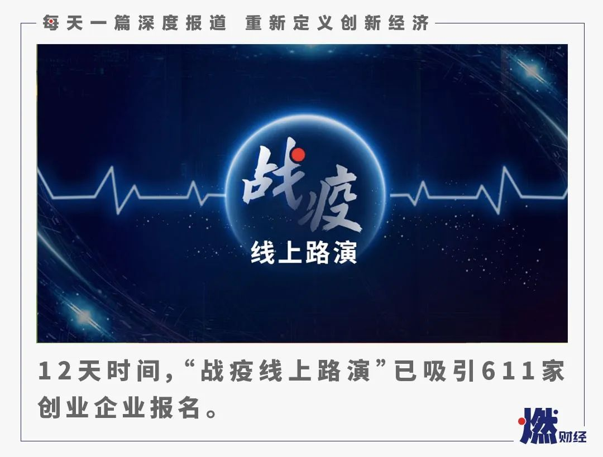
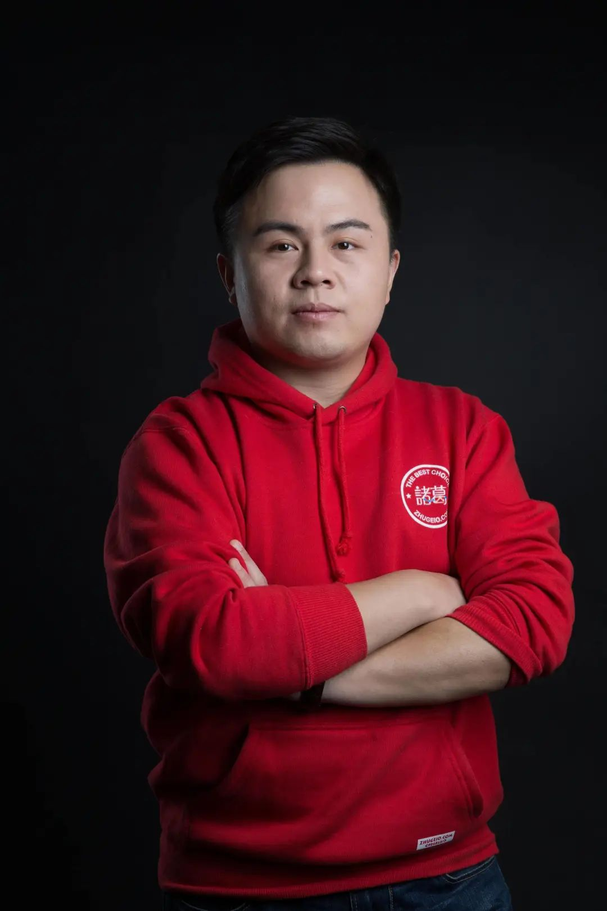
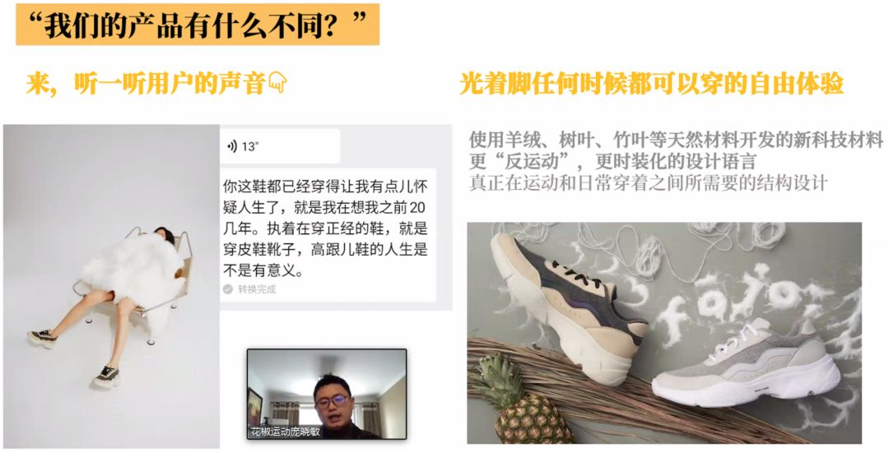

裁员这场仗，没打下来是死，打下来可能也是死
原文链接 备份链接 以下文章来源于燃财经 ，作者燃财经工作室 最残忍的是，“这场仗我没打下来是死，打下来说不定也是死。” 文 | 黎明 编辑 | 阿伦 运营 | 肖睿 疫情当前，危机四伏，不少中小企业都将裁员提上了日程。但裁员不当，却可 …

作者 | 苏琦
编辑 | 魏佳
疫情之下，消费行业遭受重击。
餐饮、旅游、零售、影院等线下业态首当其冲受到影响，众多企业因身陷“现金流”问题不得不做出裁员举动，但另一方面，生鲜电商、到家服务、无人零售货柜等新消费领域也出现逆势增长，迎来新机会。
越是在重大危机的当口，越要危中寻机。为了搭建创业者和投资人双方匹配的桥梁，由“寻找中国创客”携手数字经济投融资联盟、北京基金小镇共同主办，由29家知名投资机构共同发起的“战疫线上路演”2月16日正式启动。截至2月27日上午，12天时间，吸引611家创业企业、171家投资机构报名参加。已参与在线教育、新消费两场路演的29家投资机构，管理的基金总规模达2117.7亿人民币，共派出55人由合伙人、资深投资人、专家组成的评委团队，在线看项目。
“战疫线上路演”第二场主题为新消费专场，评委阵容包括中国互联网投资基金有限公司投资研究部总经理汪存富、北京基金小镇控股有限公司副总经理CFO钟钟、天图投资合伙人魏国兴、蓝驰创投管理合伙人朱天宇、愉悦资本创始合伙人戴泊、梅花创投创始合伙人吴世春、青松基金创始合伙人董占斌、不惑创投创始合伙人李祝捷、英诺天使基金合伙人王晟、华创资本合伙人王道平、清流资本合伙人刘博、高榕资本董事总经理韩锐、BAI贝塔斯曼亚洲投资基金董事总经理汪天凡、山水创投副总经理宋晓飞、山水创投副总经理郭永芳。
经过紧张筹备，主办方在报名和机构推荐的96家新消费创业项目中筛选出小牛酒、海帆(High-Five)亲子游泳、菲尼城、诸葛io、在楼下、味BACK、维妥科技、凡米粒FamilyOut、 花椒运动共9个项目参与第二场线上路演。

“战疫线上路演”新消费专场举行
“寻找中国创客”大赛已连续举办五年。自2015年启动以来，累计吸引了9000多个创业项目参赛，累计评选出50家“年度中国创客”，它们中间已经有多家成长为独角兽或成功上市，成为创新经济的主力军和风向标。与往年一样，大赛评委将为每一个创业项目进行打分，优秀的项目有希望获得机构的投资和支持，也将直通今年的“寻找中国创客”大赛，参与角逐“2020年度中国创客”评选。
***小牛酒***
小牛酒创始人CEO张子盛
项目简介：北京五彩小牛酒业科技有限公司是一家集产品研发、品牌运作、市场销售于一体的酒水及周边产品的商业服务公司，小牛酒是公司旗下高品质白酒品牌。
核心竞争力：公司依托智能化数据、供应链管理、金融等优势，打造酒类垂直领域新零售平台，并运用SaaS技术，为合作商家提供企业服务，进行数字化转型。
发展阶段/估值：天使轮/未披露
运营现状：2019年小牛酒销售近百万瓶，销售额达千万。
— 评委问答 —
天图投资合伙人魏国兴：产品定位在什么价位段，单瓶的价格对标哪些白酒品牌？小牛酒的价值点主要是在哪里？
北京五彩小牛酒业科技有限公司CEO兼创始人张子盛：我们目前主流的三款酒定价，28元对标的是牛栏山的小酒，36元、89元对标的是牛栏山与红星二锅头。
小牛酒的价值点有三个部分：第一，我们的品牌供应商永丰，跟红星、牛栏山，是三家老国企品牌，知名度和质量都没有问题。第二，我们运用数字化新零售的模式相比另外两家的传统打法，更具用竞争力，符合现在年轻人的需求，用户及粉丝的留存及裂变会做的更好。最后，真正的核心就是我们运用数字化技术，一瓶一码，可以承诺消费者百分百没有假酒。
不惑创投创始合伙人李祝捷：你的SaaS系统是用来卖酒、管理还是营销？两者有什么关联？
北京五彩小牛酒业科技有限公司CEO兼创始人张子盛：如果说用传统的方式来卖酒，肯定是先找代理商，再找经销商，然后去烟酒店推销，需要非常多的业务员重复去一线开拓市场，用SaaS系统可以快速把烟酒店融入到我们的平台上来，用互联网的运营，很好的服务B段用户，后台只要三个人就能管理300个店，之后还能帮助经销商去管理他的门店。
B端用户可以直接在这套系统上下订单，目前已经有892个B端用户，还能帮助B端用户面向C端用户。这套SaaS系统除了帮商家卖小牛酒，还能帮助他卖店里所有的东西，产品的曝光率和获客率都能提高，也不产生太大费用，甚至还可以更好地把用户留存在我们的平台上。
***海帆亲子游泳***

海帆亲子游泳创始人吴京
项目简介：海帆致力于为0-9岁的婴幼儿及家庭提供亲子运动服务，课程涵盖水中课程和陆地课程两大类。2018年5月，海帆海外中心落地英国，目前已有三家海外中心，井同步建立了海帆海外教学研发中心。
核心竞争力：海帆与世界知名亲子游泳机构英国Loving Water，意大利Acquarella及奥地利亲子游泳协会ABA均达成独家深度战略合作，同时与WABC和英国STA已有长达7年的深度合作。
发展阶段/估值：A轮/未披露（已完成）
运营现状：覆盖国内近40个城市，拥有近80家门店，服务家庭超过10万人次，成立至今一直处于盈利状态。
— 评委问答 —
天图投资合伙人魏国兴：你们和家盒子相比，谁做得比较大？获客成本和续课率如何？
海帆亲子游泳创始人吴京：家盒子是儿童综合体，我们做的是亲子游泳单项领域。我们的模型跟早教比较像，整个运营模式也和它们差不多，只是年龄段我们更广一些。 我们大概人均的获客成本在600到800元，续课率能做到30%多。
英诺天使基金合伙人王晟：你的成本结构中，房租水电的成本很低，你们这么大面积的店一般选址在哪儿？你们是从租金上赚钱，还是从主营业务上赚钱？
海帆亲子游泳创始人吴京：我们直营店有社区店和商场店，以二线城市太原为例，两种类型店的租金成本每天每平米都是不到两块。我们的加盟店的话，还是以二线城市为例，我们的把控是上限是不超过三块每天每平米。我们主要的盈利还是在课程收入上。
清流资本合伙人刘博：现在加盟商运营状况如何？
海帆亲子游泳创始人吴京：不知疫情何时才能结束，所以按今年前半年零收入来做预期，今年的整个营收和去年比可能不会有太多增长。我们现在加盟商大概80%以上都在盈利，纯盈利在15%左以上。2018年我们的营业额有2200万左右，纯利润700万左右，2019年营收增长近50%。
*****菲尼城*****

菲尼城联合创始人兼CEO郑圣杰
项目简介：菲尼城是一家移动式多IP大型儿童游乐服务整体解决方案提供商。通过在各种展览馆、商业综合体、旅游景区等大型空间举办活动，在里面填充时下流行的游乐设施、IP内容，为0-12岁儿童群体及其家庭提供游乐、亲子、运动、教育、餐饮等一站式服务。
核心竞争力：菲尼城有着国内头部动画IP独家授权，并且能够根据场馆面积和客户要求，准确输出不同形式的项目和应用场景。场地面积覆盖范围可达100-10000m²。通过持续的IP开发，场景开发和新项目研发，菲尼城能迅速抢占儿童游乐市场，打造自己的品牌辨识度。
发展阶段/估值：未披露
运营现状：2015年至今，在全国已落地100多场活动，2019年超过3000平的大型菲尼城相继在青岛、大连、北京、哈尔滨等城市落地，同时启动菲尼城城市合伙人计划。
— 评委问答 —
BAI贝塔斯曼亚洲投资基金董事总经理汪天凡：你预测2020年的整个毛利和净利的水平都比过去要高，这中间的变量是什么？
菲尼城联合创始人兼CEO郑圣杰：未来三年的预测，是基于融资到位情况下的一个预测，我们在去年年底的时候开始准备融资，数额是4000-5000万人民币。因为我们线下活动的边际成本很低，所以我们的活动规模化以后，整个利润水平比现在高很多，所以我们现在要追求更用最短的时间做到规模化。到2019年为止，我们都还是一直在做活动，今年开始我们会开拓C端产品的研发，未来C端产品贡献的利润会是很大的一个变量。
观摩评委：2019年2300万的收入，里面的成本模型是怎么样？
菲尼城联合创始人兼CEO郑圣杰：我们2019年一共做了4场大型的菲尼城，30多场小型的菲尼城。小型活动成本主要是货品折旧摊销、现场运营人员工资、场地租金，还有运费和搭建费的人工成本。大型活动场地面积很大，一般都是选择展览馆，成本包括场地租金、推广成本，票务渠道分成，还有运营和安装的人员成本。

***诸葛io***

诸葛io创始人兼CEO孔淼
项目简介：诸葛io围绕业务场景为企业提供开箱即用的用户行为分析SaaS工具、可私有化的PaaS平台以及SMART数据中台服务，搭建了从售前到售后的完整服务体系。
核心竞争力：公司推出的新一代数据分析产品，为企业提供“产品+服务”的数据解决方案，5年行业经验，技术成熟，服务体系完整。核心团队来自西班牙电信、Oracle、SAP、Microsoft等国内外知名企业。
发展阶段/估值：战略融资/未披露（已完成）
运营现状：2015年至今，累计合作超60000家企业，服务客户覆盖各行业。
— 评委问答 —
中网投投研部总经理汪存富：能介绍一下财务经营业务数据吗？
诸葛io创始人兼CEO孔淼：我们从2016年之后每年都有融资，最近也有在进行中的融资。我们公司的策略是从早期就开始追求收入增长，慢慢从亏损到现在打平，整个2019年基本上都处于现金流平衡的状态、微亏，到今年预计全年营收会开始有利润。
不惑创投刘芳君：这些客户侧重哪些行业？数据中台产品交付一个客户大概需要多久？
诸葛io创始人兼CEO孔淼：数据中台目前来讲核心就是零售和地产行业。对于SaaS和私有化来说，我们会在不同的经济环境下，侧重不同的行业。
2019年来讲比较偏金融业，2018年是教育，2017年是互金，最早的时候是互联网公司，所以我们对应的行业相对来讲没有太集中。我们最近也在产品上做一些场景化，降低门槛。但通用也有好处，就是像最近疫情期间，有一些行业的客户依旧在增长，比如游戏、医药等。
因为中台不是标准化产品，而且数据产品本身落地也需要数据，所以要先有业务状态才能运转。我们一般会在年底会谈第2年的预算，一年大概会分3-4期项目，一个季度为一期，基本上是这样一个节奏。

*****在楼下*****

在楼下创始人CEO张赢
项目简介：公司以自主研发的无人便利柜为智能终端，通过互联网大数据管理系统与自动化工程技术相结合的科技创新，构建深入城市社区的“公共冰箱”，并以自运营高品质供应链，为市民提供24小时营业、新鲜高效的社区零售服务。
核心竞争力：在楼下团队再次创业，以长久积累的供应链优势和社区运营优势，目前已在北京落地400余个社区，并与海底捞开展半成品菜合作，提高坪效。
发展阶段/融资金额：A+轮/1000万美元
运营现状：在2019年4月前端整体盈利。目前集中在北京和上海健康快速扩张，北京入驻400社区共1600机台。未来在楼下将拓展到全国，致力于成为中国社区智能零售第一平台。
— 评委问答 —
光速中国副总裁赵婧：便利柜业态和到家业态之间有竞争关系吗？
在楼下创始人兼CEO张赢：到家的话，配送小哥送一瓶牛奶，配送费最少也要三块钱，用便利柜履约的话，只需要1毛5分钱，包括了所有的硬件、软件、折旧、维护费用。一瓶500毫升的鲜牛奶现在也就9块9毛钱，在客单价不高的时候，又希望拿到新鲜的牛奶，又希望它很方便安全，冷藏保存，在楼下便利柜的履约方式是最合适的，履约成本又低。我们的盈亏平衡点很低，600块钱就可以了，平均回本周期是12-15个月。

*味BACK*
 味BACK创始人王致祥
味BACK创始人王致祥
项目简介：通过数据化选品、市场化口味升级、健康属性附加值、时尚的产品包装，打造出一系列符合现代年轻人消费需求的本土零食精品，在多个主流电商平台成为销量明星，被用户称为“国产零食之光”。
核心竞争力：旗下爆款单品港式咸蛋黄鱼皮，日销量过万份、次月复购28%、上线次月月销达200万。还有节令爆款闽南团圆月饼，30天内销售10万份。
发展阶段/融资规模：Pre-A轮/数千万元
运营现状：2019年铺设了线上平台300+，线下网点铺设1w+ 。希望在2020-2021年先后再发布5-10款爆款，线上平台拓展至1000+，线下网点铺设至10w+，海外经销商累计1000+。
— 评委问答 —
天图投资合伙人魏国兴：疫情期间，味BACK的销售情况如何？
味BACK创始人王致祥：我们销售市场反而是增长的，疫情导致我们2月份的销量是去年的两倍，但是货卖出去却发不出去，整个物流链和中间的分发链还存在一定问题。有很多顾客因为收不到货导致退货，我们现在在酌情减少新的活动排期，因为马上就要到三八大促了，我们会比较担忧发货的问题。
清流资本合伙人刘博：能不能具体说下现在渠道的情况，以及毛利润的情况？
味BACK创始人王致祥：我们现在有80%是直接零售，to C端，20%以批发分销的方式进行。这其中80%全部来自于线上，20%是线下。我们自营的毛利相对比较高，产品毛利有65%，到线下分销的毛利相对较低，在50%左右。
不惑创投创始合伙人李祝捷：那么多零食可以做，为什么选鱼皮这个品类？
味BACK创始人王致祥：鱼皮这个品类是因为在我们做的深度调研结果里，膨化零食的出货数量是最高的，仅次于糖果，糖果本身是一个下行市场，我们对膨化这样一个微增长的市场非常看好。
基于这个选择，膨化食品的升级有两个方向，一个是工艺升级，用低温油炸或者是冻干工艺去替代原本的高温油炸工艺。另外一方面是原材料的升级，用山药、玉米、甘薯这些原材料去替代原本的米果。经过测试，无论工艺怎么升级，都没有办法保留膨化食品酥脆的口感，至于原材料，很多商家也在做山药片，但这些都没有办法解决消费者心智认知当中的健康食品的概念。
我们想到了蛋白质，2018年鱼皮在新加坡当地已经比较火了，陆续传到国内市场，而新加坡鱼皮的工厂就在广东东莞，实际上是中国本土的产品，我们就开始关注这一赛道。广东和香港地区的消费者也成了我们特定的种子用户。

***维妥科技***

维妥科技创始人兼CEO朱起
项目简介：维妥科技是一家服务于电商直播机构及相关供应链的数据中台服务商，旗下主要有两大产品：直播眼和品播汇。直播眼数据产品通过每天采集全网公开数据，包括16万+直播间、千万级SKU商品，优化直播机构/供应链的人效与坪效。品牌汇则能帮助品牌方对直播流量、互动、转化等数据进行监测和分析，掌控商品的价格、商誉和销售趋势，实现商品与主播的智能匹配。
核心竞争力：通过大数据和AI帮助用户在投放达人时进行决策，并且帮助他们做店铺直播代运营。品播汇客户包括宝尊、碧橙、乐其、雀巢、Levis、Hacci、Healthycare、欧姆龙等等。
发展阶段/估值：天使轮/近千万元
运营现状：2000+B端用户，300+机构用户，头部机构深度合作。
— 评委问答 —
中网投投研部总经理汪存富：维妥的盈利模式是什么？在全网公开去抓数据，这种数据获取的渠道会不会有一些隐私或者其他方面的问题？
维妥科技创始人兼CEO朱起：我们是一个数据平台，主要以数据展示为主，但同时我们有一个招商协作工具，这个会偏SaaS，但是这两块都暂时是不收费的，付费的部分主要是在品播汇的解决方案和未来S2B中进行盈利。我们现在公开采集的二十几万个直播间，全都采集的都是公开的数据，不是破解或者说是以任何非法渠道拿到的，也没有获取任何的个人隐私数据。
华创资本合伙人王道平：你们主要的对手有哪些？收入情况怎么样？
维妥科技创始人兼CEO朱起：我们在各个模块上都有相对比较细分的竞争对手，但整体的商业模式不同，比如说在直播源数据这一块，我们2018年入行的时候也有个别几家数据公司。像品播汇这类做品牌店铺解决方案的也有竞对，但跟我们的方式不同，我们更多的是提供一个数据驱动的解决方案：通过结合我们的数据，做一套品牌投放咨询与店铺的代运营，数据也为我们的这一块业务提供了壁垒。
跟我们整体商业模式完全一样的竞品是不存在的，例如我们某一大型品牌客户，通过我们的品牌直播解决方案，他们的整个投入产出比达到了1:40。去年10月到12月份，我们每个月有近百万的收入，主要是品播汇的服务费。

***凡米粒FamilyOut***

凡米粒创始人兼CEO王国毓
项目简介：家庭时尚潮流消费品品牌，利用自主创新设计和与知名动漫IP合作，通过线上线下母婴渠道和潮玩渠道，以及部分海外市场等进行销售。还与得到、年糕妈妈、凯叔讲故事等KOL合作，进驻各大积分商城、银行、机构。
核心竞争力：截至目前，公司已与多啦A梦、超级飞侠、HELLO KITTY、海绵宝宝等知名IP签约合作，并打造出”大脚怪”、“蓝鲸艾可”、“午空”、“帽衫哥”、“Tasetabite”、“funice”、“超萌宇航员”等自有IP。
发展阶段/估值：计划A轮融资，估值2.5亿元
运营现状：2019年，凡米粒增加了连锁零售渠道合作伙伴，与华润万家零售集团旗下的高端超市品牌华润Ole的50家门店；Citysuper连锁、G-super绿地连锁、金鹰连锁、城市超市连锁等110家等多家高端超市品牌门店达成合作。
— 评委问答 —
天图投资合伙人魏国兴：现在线下渠道的供货是直接买断还是预付批发？
凡米粒创始人兼CEO王国毓：我们的渠道线上是天猫自营，线下分为两部分，一个算是自营合作，跟渠道直接供货，比如说玩具反斗城等，占15%左右。另外一种方式是通过大概30个区域的经销商，每个区域有1-2家母婴店，是当地的渠道。
直营连锁渠道有一定的账期，当然他们也会有一部分预付款，其他的大部分都是以现金模式直接买断。现在目前代销的只有玩具返斗城这一家，占比在5%以内。所有的经销我们不走批发渠道，这些经销商实际上也是供给线下的下沉连锁。
天图投资合伙人魏国兴：现在的动销情况如何？现在的销售收入构成中，大IP和自有IP的比例如何？
凡米粒创始人兼CEO王国毓：我们目前的动销，在同品类当中应该是TOP3的品牌，箱包、水杯、水壶都可以进入TOP3。
创业初期，80%是大IP产品，到了2019年，92%是自有IP产品销售。我们2020年会加大IP的不一样的玩法。目前来说，我们跟工厂能实现早期备料，7-14天的生产周期，各渠道和各终端的经销订货都是按月做计划。所以整个库存比还是能够控制住。

***花椒运动***
花椒运动创始人庞晓敏参与线上路演
项目简介：fajo花椒运动是定位在随时随地“光脚穿”的时尚运动鞋品牌。产品以羊绒、丝绸、竹叶和玉米纤维等天然科技，打造光脚穿着体验。品牌从女性时尚运动鞋用户切入，产品上线至今不到六个月时间，销售额突破两千万。
核心竞争力：花椒运动团队由资深互联网社群运营，优衣库和耐克品牌运作，李宁产品开发和供应链背景的团队组成。产品能力和品牌运作能力较为出色。
发展阶段/估值：Pre-A轮/650万
运营现状：从“轻健身”定位切入，单渠道首次上线销售额单月突破300万元。
— 评委问答 —
天图投资合伙人魏国兴：上线6个月，现在复购的情况能看出来吗？今年会上新品吗？
花椒运动创始人&CEO庞晓敏：分几个情况看。我们隔月复购的用户占比13%左右，同时购买过我们两款产品的用户大概是25%左右。尤其是我们2019年12月份上线的羊绒鞋，同时购买这款产品不同尺码的用户大概达到了18%左右。
我们今年有6个新款，且主打“光脚穿”，对鞋子做不同的定义。这里面有两个主要的系列，一个是用丝绸做运动鞋，另外一个是用玉米纤维做运动鞋，都是中国本土的材料，用新的科技去打造新的穿着体验。
观摩评委：产品的供应链如何管理？
花椒运动创始人&CEO庞晓敏：我们现在有三个工厂都在广东，一个在东莞，一个在中山，一个在佛山，东莞和中山的工厂都是我们合伙人自有开发的，这使得我们在开发和上游材料的研发上有非常强的把握。
鞋的的尺码段决定了库存的分布和积压，我们现在基本上是5000-8000双一次下单，在非常短的时间内不停调整我们在每个尺码段上的分布，缩短货品周转期。我们一款鞋在仓库的周转周期差不多只有15天。绝大部分线上的传统品牌，一般是在30天到40天左右。

同题问答
卖车卖奢侈品也可以转为线上种草
1、线下消费受疫情冲击严重，一夜之间几乎“全民做微商”，哪些类型的项目适合转到线上，哪些不适合？转型线上的过程中，会有哪些难点，能否给出一些建议？
英诺天使基金合伙人王晟：得分两个维度来看。第一个维度就是线上直接带动销售的品类。它应该是实体商品，用户消费决策速度比较快、决策成本比较低，也就是说东西不能太贵、也不能太复杂、比较贴近用户需求，其实就是一些日常的消费品，特别适合转到线上。因为现在电商直播的带货能力越来越强，这次疫情也使得大家接受程度越来越高。
另一方面，对于一些重决策或者服务类产品，比如疫情期间也有不少尝试在线卖车、卖奢侈品的，这类产品原本的交付场景、履约场景在线下，也是可以转为线上种草的。企业多把产品、品牌给客户种种草，也不是一件坏事。这样至少能吸引到一些关注，获得一些私域流量，能在未来的客户转化上有所帮助。
山水创投副总经理宋晓飞：疫情或将加速包括电商、直播、短视频、游戏、知识付费等线上场景的“非接触经济”，此外，实体零售业态在疫情下为了求生，更迫切的去尝试转线上，细分品类如母婴用品、化妆品、生活消费品、服装衣帽、食品生鲜、家用电器等等都会继续加速线上化、电商化。像旅游、餐饮、娱乐，文化、体育等体验性线下场景消费行业，受疫情影响已大幅降温，且无法或很难转型线上，待疫情过后才会恢复生机。
到家服务、无人零售迎来利好
2、除了转线上，企业现在还有哪些方式可以尝试？
英诺天使基金合伙人王晟：现在疫情期间大家也出不了门，最主要的就是到家服务了，这个方向还是可以多发展。另外，无人零售会因为这次疫情产生一波利好。如果你楼下有一个无人零售的货柜，品类相对比较多元，除了食品饮料，还会有一些蔬菜水果生鲜，甚至医疗卫生物资，会让人觉得十分便利。
疫情后餐饮业预计恢复快，旅游业迎小高潮
3、疫情过去之后，会出现报复性消费潮吗？线下、线上应分别如何迎接这波消费潮？
华创资本合伙人王道平：具体要看不同的行业，比如餐饮可能恢复得比较快，一日三餐是刚需但也很难报复性消费，因为很难过度消耗，估计会比较快的恢复到正常水平，酒店以及一些服务业估计也会慢慢恢复，旅行有可能会有个小高潮，因为春节的出行被抑制了，这部分会在疫情后会慢慢得到释放。对于恢复比较快的行业，各个公司相应的营销和运营动作估计会比较多而且集中，企业可以根据自身情况做一些计划，如何更好的更有效率的开展工作，避免直接竞争。
山水创投副总经理宋晓飞：短期来看，线下场景消费行业会有一定恢复性反弹，毕竟这些是百姓生活的一部分。但疫情下收入的阶段性减少也会影响到疫情后的消费，部分家庭、年轻群体背负负债，加上消费者的心理修复还需要一个过程，消费会比较谨慎。中长期看，相当比例的人群不会盲目消费，只会更加关注健康消费。外出就餐、聚集消费等一些消费场景会大量减少。到店购买的恢复还需要一个过程。这些改变都会在一定程度影响到疫情后的消费。
单纯的无人便利店玩家很难有竞争力
4、去年社区无人便利店发展趋缓，疫情下能否能重获新机？一些无人社区店开始和半成品菜合作，你看好这种模式吗？看这类项目的时候你更关注哪几类数据？
华创资本合伙人王道平：无人便利店在疫情之下受到了广泛的关注，从消费便利性角度来说，这也是挺好的形式，相信会有更多公司进场尝试。我觉得单纯的无人便利店玩家很难有竞争力，大的平台和公司会更有优势。
英诺天使基金合伙人王晟：纯粹的无人便利店短期内我们还是不是特别看好，在看这些模式的时候，主要看的还是SKU、动销、库存周转等模型。另外一方面就是关注效率，点位的分布、是否有前置仓、物流、补货的效率等，以及设备的稳定性，是否方便维修。
潮鞋、汉服最大的痛点在于供应链
5、去年，国潮、潮玩、炒鞋、汉服等新消费趋势崛起，今年将面临哪些新挑战？在扩张、运营等方面，有哪些好的建议？
英诺天使基金合伙人王晟：这些都是不可逆的趋势，这是从我们的消费群体的逐渐迭代中形成的趋势。但是sneaker（潮鞋）这一块，我还是略微有些顾虑的，过去sneaker确实有一群很忠诚的粉丝，愿意消费和使用，但是前两年sneaker市场的暴涨，更大的驱动因素是因为炒鞋。而我认为炒鞋实际上使sneaker背离了商品的实际价值。这块市场我觉得今年挑战会很大，今年甚至明年都未必会超过去年的激增。
上述几个趋势中，我认为最痛的环节就是供应链，尤其在汉服上面，供应链特别痛，如果这个问题解决不好，必然影响产业的发展速度，虽然用户需求很强，但供应链跟不上，设计能力和产品品质跟不上的话，就会很危险，必须要加强。
低线人群的零售升级、健康食品、保险等存新机
6、在消费领域，2020年有哪些新人群和新趋势值得关注？最近有看到比较心动的项目吗？
华创资本合伙人王道平：比较关注低线人群的零售升级，另外线上线下加速融合的趋势，以及新的有特色的品牌也是我们比较关注的。比如我们投的超级零，是代餐领域很有特色的品牌，产品和营销都很有特色。
山水创投副总经理宋晓飞：疫情后，人们会注重打造家庭健康环境及个人健康投资，在健康方面的消费习惯会有所改变，这里面存在很大机会。在线问诊、远程医疗、医药O2O，互联网医疗企业迎来出圈机会。
清流资本合伙人刘博：四个细分领域可能会受益。一个是方便产品短保化，可能意味着更健康和口味更优。本次疫情对更高级的短保类食品是一次很大的机会和促进；第二类受益品类是健康食品，本次疫情期间对全民是一次健康理念强制大学习，未来对食品的健康要求会更突出；第三类是保险，着重在健康险种类，大家未来对看病有商业健康险的需求会更大一些；第四类，是会员管理系统产品 。这一波事件让很多消费型企业意识到，运营自己的会员体系非常重要。


原文链接 备份链接 以下文章来源于燃财经 ，作者燃财经工作室 最残忍的是，“这场仗我没打下来是死，打下来说不定也是死。” 文 | 黎明 编辑 | 阿伦 运营 | 肖睿 疫情当前，危机四伏，不少中小企业都将裁员提上了日程。但裁员不当，却可 …
原文链接 备份链接 《创新经济战疫计划》，是燃财经在新型肺炎疫情期间推出的特别栏目，关注创新经济企业遇到的新难题、商讨应该采取的新对策，希望能够帮助中小企业一起战胜挑战、把握机会。 作者 | 黎明 编辑 | 阿伦 疫情当前，危机四伏，不少 …
原文链接 备份链接 这题来自Voicer，他们采访了包括我们在内的6位创意行业内不同分支的同侪，分享了这次疫情对他们的影响以及他们相应的思考和应对策略。 深度专访：疫情之下的创意从业者，你们还好吗？ 而在这个心情极其复杂的超长春节里，我 …
原文链接 备份链接 疫情不仅严重影响了企业复工，多家A股公司年报披露也因此延期。作为此次疫情重灾区，湖北省内上市公司年报披露所受影响正逐步显现 文 |《财经》记者 张建锋 王颖 编辑 | 陆玲 突然袭来的新型冠状病毒，不仅严重影响了企业复 …
原文链接 备份链接 新冠病毒一直在变异，研究者发现截至目前仍较缓和。但鉴于当前疫情的严峻形势，共享病毒相关的数据对控疫更有帮助 室外环境中，患者咳嗽、说话等喷出来的病毒，很快会被大气稀释，在扩散过程中会衰减，所以浓度会变得很低，病毒活性也 …